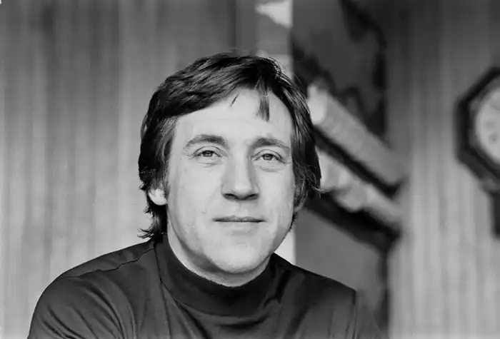
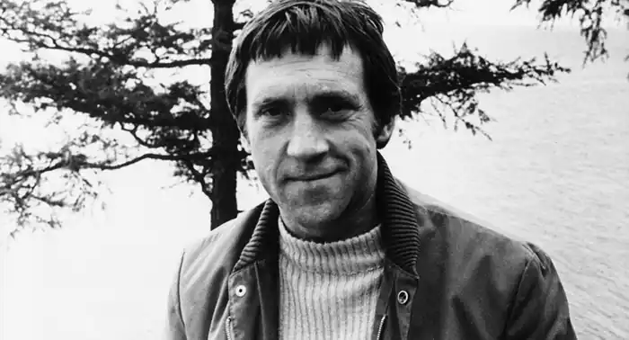
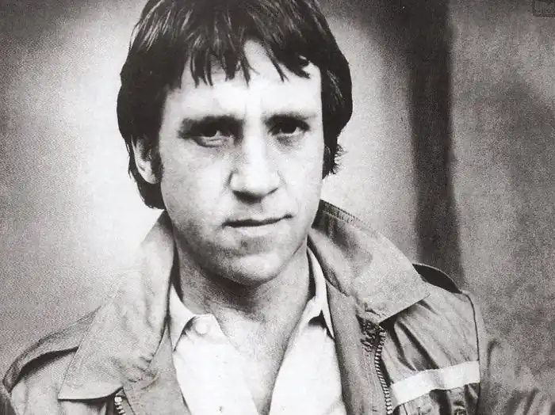
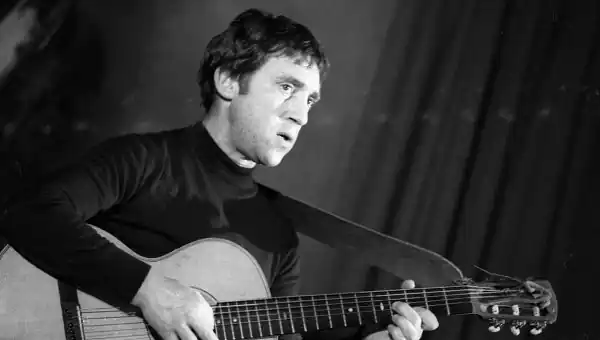
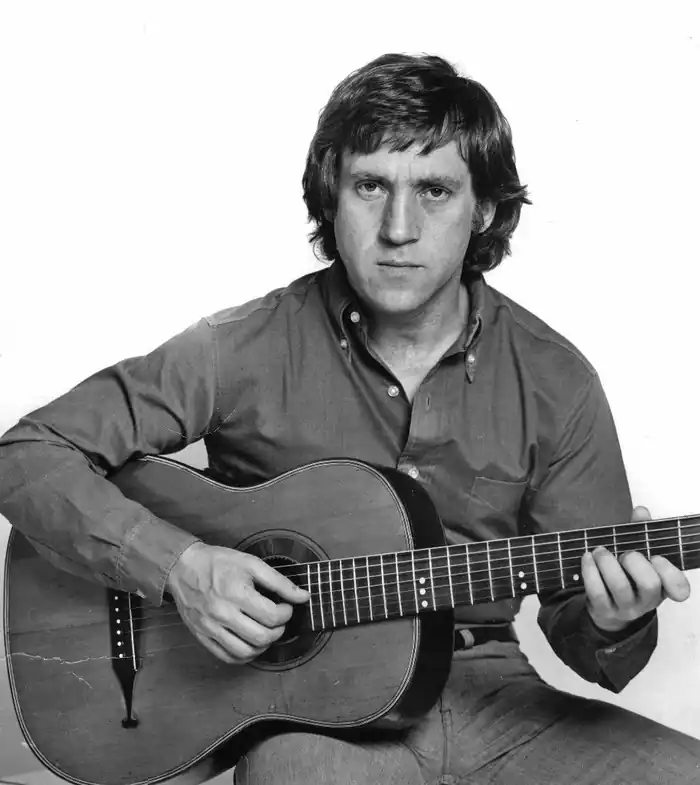
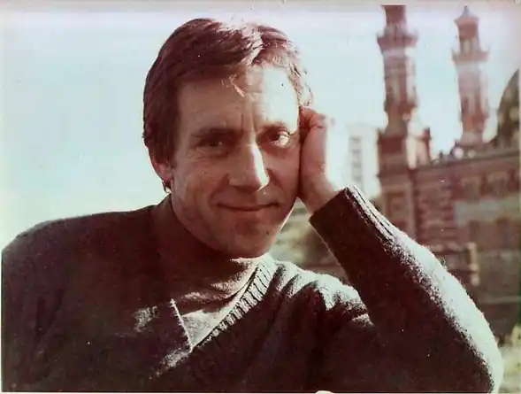

Біографія Володимира Висоцького
Володимир Семенович Висоцький — знакова постать свого часу, поет, актор і автор пісень, виконуваних на семиструнній гітарі. Він був кумиром мільйонів в нашій країні, і досі його пісні знають і люблять. Він посмертно нагороджений Державною премією СРСР.
Дитинство і юність Володимира Висоцького Володимир Висоцький народився в Москві, у великій комунальній квартирі на 1-й Міщанській вулиці. Його батько був родом з Києва, полковник і ветеран Великої вітчизняної війни. Мама працювала перекладачем-референтом. У віці чотирьох років, коли почалася війна, Володимир разом з мамою поїхав в Оренбурзьку область, де вони прожили два роки. Після евакуації, Володимир Висоцький з Уралу повернувся в Москву. Через два роки після закінчення війни батьки Володимира Семеновича розлучилися, проживши в шлюбі 5 років. Батько знову одружився, і в 9-річному віці разом з батьком Володимир потрапив в окуповану післявоєнну Німеччину. Враження артиста навіть здалеку не нагадували життя його однолітків у повоєнній столиці. Тут він брав уроки гри на фортепіано. Мама музиканта також вийшла заміж вдруге. Володимир Висоцький спілкувався і з вітчимом, і з мачухою. Проте відносини з першим склалися гірше, ніж з другої. У 1949 році, повернувшись з Німеччини, Володимир Семенович оселився в центрі Москви з новою дружиною батька на Великому Каретному провулку. Там то Висоцький і "заспівав" з компанією міської молоді 50-х років, чиє дитинство протікало в воєнні роки. В юності Висоцького в моді була блатна романтика. У кожної дворової компанії була гітара і під неї співали жалісливі пісні про Воркуті, Колимі, Мурке. І саме в цей час у Висоцького почався "роман" з гітарою. Навчання Володимира Висоцького 10-класник Володимир Висоцький почав ходити в драматичний гурток у Будинку вчителя. Але він не одразу зрозумів, що хоче стати актором. Після школи майбутній артист вступив до Московського Інженерно-Будівельний інститут, і кинув його через півроку. Несподіване рішення він прийняв у новорічну ніч 1956 року. Він разом зі шкільним другом Ігорем Кохановським вирішив зустріти Новий рік за малюванням креслень, без яких вони не змогли б здати сесію. Одразу після бою курантів студенти взялися за справу і за дві години покінчили з кресленнями. І тут Висоцький раптово став поливати тушшю свої папери зі словами: "Все. Буду готуватися, є ще півроку, спробую вступити в театральний. А це — не моє…". Володимир Висоцький поступив в Школу-студію при Мхаті на акторське відділення. Через три роки він зіграв свою першу роль у навчальному спектаклі "Злочин і покарання" і вперше потрапив на телеекран. Він зіграв невелику роль в картині "Однолітки". Театральна кар'єра Володимира Висоцького Після закінчення МХАТУ Висоцький працював в театрі імені Пушкіна. Правда недовго. Потім він перейшов в Театр мініатюр. Грав у епізодах, масовці і особливої радості від сцени не отримував. Він також намагався пробитися в театр "Современник" "Свій" театр Володимир Семенович знайшов у 1964 році. Ним став Театр на Таганці. Саме в цьому театрі Володимир Семенович пропрацював до самої смерті. Юрій Любимов згадував, як Висоцький прийшов до нього влаштовуватися на роботу. Артист запропонував послухати кілька своїх пісень і Любимов, замість планових п'яти хвилин, слухав барда півтори години. На Таганці Висоцького чекала ціла палітра образів – Гамлет, Пугачов, Галілей, Свидригайлов. У театрі, втім, справи йшли не дуже гладко. Любимов часто по-батьківськи закривав очі на проступки Висоцького, чому заздрили колеги. Але тут у нього були і друзі — Валерій Золотухін, Леонід Філатов і Алла Демидова. Разом з акторами Театру на Таганці Висоцький їздив з гастролями за кордон: у Болгарію, Угорщину, Югославію (БІТЕФ), Францію, Німеччину, Польщу. За тиждень до своєї смерті Володимир Висоцький зіграв свою останню роль — образ Гамлета в однойменній постановці за Шекспіром. Творчість і пісні Володимира Висоцького Володимир Семенович вважав своїм вчителем Булата Окуджаву. Саме його творчість пробудило у Висоцького інтерес до авторської пісні. Після він присвятить Окуджаві "Пісню про Правду і Брехні". Володимир Висоцький — Балада про Любов Перші композиції артист написав на початку 60-х. Це була "дворова романтика". Її не сприймав всерйоз ні сам Висоцький, ні перші слухачі. Вважається, що перша пісня, написана Висоцьким, була "Татуювання". Рік заснування — 1961, місце — Ленінград. Але тільки через кілька років після цього творчість музиканта набуло більш зрілі форми. У 1965 році співак написав свою знамениту пісню "Підводний човен", яка, за заявою його друга Ігоря Кохановського, ознаменувала закінчення творчої юності поета. Володимир Висоцький написав безліч пісень до кінофільмів, в яких знімався. Як людина різносторонній і творчий він брав активну участь у створенні кінострічок. Його пісні звучать в таких фільмах як "Вертикаль", "Втеча містера Мак-Кінлі", "Небезпечні гастролі", "Я родом з дитинства" та інші. Репертуар Володимира Висоцького складається з більш 600 пісень та 200 віршів, які досі залишаються популярними і не втрачають актуальності. На його концерти приходило величезна кількість людей. Він заряджав усіх своєю енергетикою, щирістю, його пісні були близькі майже всім верствам суспільства і не залишали нікого байдужим. Він для всіх був "своєю людиною", в його піснях відбивалися різні теми — військові, блатні, гумористичні, казкові, романтичні і ліричні пісні, казки або пісні-діалоги. За життя артиста було випущено всього 7 міні-альбому по 4 пісні, а так само десь 11 пластинок зі збірниками пісень різних виконавців, на яких були записані і його композиції, в основному саундтреки до фільмів. Вже після смерті Володимира Семеновича з 1987 року була випущена серія грамплатівок "На концертах Володимира Висоцького" на 21 диску. А в 1993-1994 роках компанія "Апрелівка Саунд Інк" записала 4 пластинки з рідкісними і раніше не издававшимися піснями. Володимир Висоцький і зйомки у фільмах Кіно і театр йшли в життя Висоцького паралельно. У 1961 році Володимир Семенович зіграв невелику роль в картині "Кар'єра Діми Горіна". У той час акторові діставалися невеликі сірі ролі другого плану, порожні і нудні. Втіха Висоцький почав знаходити в пияцтві. Це стало причиною розладу на роботі і в сім'ї. Успіх прийшов до Висоцькому в 1967 році. На екрани вийшла картина "Вертикаль". Особливо полюбилися глядачам пісні з фільму, написані артистом. Володимир Висоцький в кінці 60-х років багато знімався. Він працював над фільмами "Короткі зустрічі", "Інтервенція", "Служили два товариша", "Хазяїн тайги", "Небезпечні гастролі". В цей час СРСР почали поширюватися магнітофони. Неофіційні записи Висоцького стали з'являтися практично в кожному будинку. Артист став справжнім кумиром, але він став неугодний радянської влади. Висоцького часто не стверджували на ролі, а пісні не допускалися на радіо. Тому в 70-ті роки Висоцький знімався мало. Але все ж на екранах можна було почути його пісні та пісні на його вірші: в драмі "Сини йдуть у бій", фільмах "Контрабанда" і "одного разу один", драмі "72 градуси нижче нуля". Були і ролі в кіно: "Погана хороша людина", "Розповідь про те, як цар Петро Арапа женив". У театрі на Таганці Висоцькому то дістаються головні ролі, то виганяють з роботи за п'янку. Артист не раз побував на волосині від смерті – він потрапляє в реанімацію через напружену нервової діяльності, хворого серця і зловживання алкоголем. Нереалізовані ролі Володимира Висоцького У Володимира Висоцького досить не зіграних ролей. Так, він міг би зіграти Степана в "Андрії Рубльові" Андрія Тарковського. Коли режисер збирав інформацію про Рубльові, то дізнався, що він навчався іконопису в монастирі Висоцького. Тарковський любив містичні збіги і вирішив знімати в картині Висоцького. Однак, цього не сталося. За однією версією, не дозволили чиновники Держкіно, з іншого – Висоцький запив. Не затвердили Висоцького і на роль у картинах "Над Тисою" та "Аннушка". У 1969 році Висоцький сам попросився до Ельдару Рязанову в "Сірано де Бержерак". Однак той відмовив, посилаючись на те, що йому треба знімати поета, а не актора. Намагався Висоцький потрапити і в картину "Софія Перовська", пригодницький фільм "Зухвалість" та мелодраму "Дорога додому". Режисера різними способами намагалися пробити в Держкіно дозвіл знімати актора. Однак чиновники боялися артиста як вогню. Особисте життя Володимира Висоцького На першому курсі Володимир Семенович познайомився зі студенткою Ізой Жукової. Вона стала його першою дружиною, вони одружилися навесні 1960 року. Правда шлюб був недовгий, з дружиною артист посварився, і вона покинула Москву. Через рік Висоцький на зйомках фільму познайомився з актрисою Людмилою Абрамової. Вона стала його другою дружиною і народила Висоцькому двох дітей – Аркадія і Микиту. У 1968 році вони розійшлися. Третьою дружиною Володимира Висоцького стала Марина Владі (Марина-Катрін Володимирівна Полякова-Байдарова). Вона з'явилася в житті артиста в 1967 році. Володимир Семенович закохався в неї після фільму "Чаклунка". Дивився стрічку кілька разів в день і мріяв про актрису багато років. Знайомство відбулося в ресторані СОТ, куди Висоцький прийшов після спектаклю. Мовчки взяв руку Марини Владі, сів навпроти і не зводив очей з коханою. Через кілька років, в 1970 році вони одружилися. І були разом 10 років. Марина Владі ввела дружина в коло європейських знаменитостей. На заході Висоцький випустив кілька пластинок. Вона була його музою і надійною опорою. Смерть Володимира Висоцького Життя Володимира Семеновича несподівано обірвалося 25 липня 1980 року в 4:10 ранку. Артист помер уві сні, в своїй московській квартирі. Точна причина смерті не встановлена досі, тому що не було проведено розтин на прохання близьких. За однією версією, причиною смерті був інфаркт міокарда, з іншого — асфіксія, задушення, як наслідок надмірного застосування седативних засобів. В цей час в Москві проходили літні Олімпійські ігри, тому були надруковані лише дві статті про смерть артиста. Над віконцем театральної каси було вивішено оголошення: "Помер актор Володимир Висоцький". Актор похований на Ваганьковському кладовищі. Здавалося, на кладовищі прийшла вся Москва, люди збиралися біля театру, щоб попрощатися зі своїм кумиром. Як це часто буває, визнання до Висоцькому прийшло вже після його смерті. У 1986 році Володимиру Семеновичу було посмертно присвоєно звання заслуженого артиста РРФСР. А ще через рік присуджена Державна премія СРСР за образ Жеглова в телевізійному художньому фільмі "Місце зустрічі змінити не можна" і авторське виконання пісень. У 1989 році було прийнято рішення відкрити музей Володимира Висоцького у Москві за підтримки Радянського фонду культури, Міністерства культури СРСР, Мосміськвиконкому і громадськості.